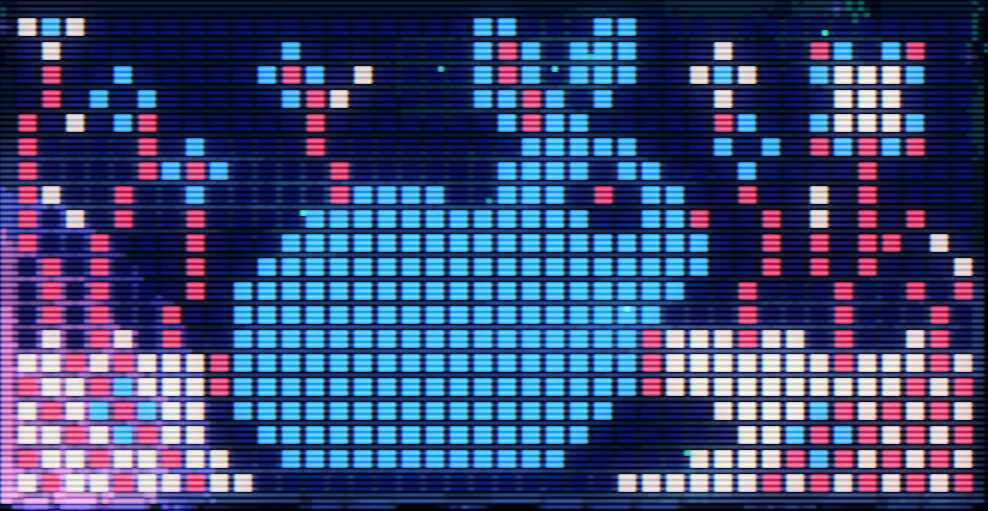
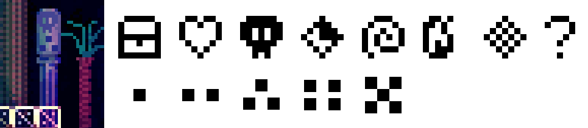

16 Rabbits.
Collect 16 rabbits, you can get information of the secret area.
You can:
Press the button to show/hide all rabbits, or
Click the rabbit in the image, and jump to the position on the map automatically, click the icon to show tips.
Some rabbits need to solve puzzles to find, if you can't find the clues, you can refer totechraptor.net。
Enjoy it!
If you need tips, you can click this button to view:
1.Mosaic rabbit: Dig the ground with the spinning top on the left, make the image on the screen look like this :
2.Hidden In The Vines: check the code hidden in the left room's vines.
3.Start area: jump on the bubble from the left side.
4. Numbers on the map: there are special pillars in the background with symbols like the following image shows: 1st row: symbols, 2nd row: indices. Connect the same symbol follows the indices will get numbers on the map.
5.UV rabbit: use the UV wand near the four fire save point, you may see it.
6.Fish rabbit: use the UV wand, and check the arrows on the wall.
7.Ghost face rabbit: the face of the ghost will change, check the upper left room of the room where you clear the game to get the codes.
8.Spike rabbit: go across the water by disc, and Jump on top of the block to the right and step on the disc, in the middle area of the right room jump to the upper-right corner, you can enter another space. Use the disc to reach the top-left corner.
9.Duck Rabbit: In the upper right corner of the map, there are several face symbols on the wall. There are icons in the upper left hidden room after you clear the game. Then go to the right side of the four fires save point, where there is a duck, and blow the flute.
10.Dream Rabbit: Stand still anywhere you can jump high (or use bubbles to jump), and a hollow rabbit pattern will appear after a while. Jump up and touch it.
11.Save File Rabbit: There are 4 patterns on the wall of the room below this room, which are the icons of three new game save files. The flashes around the flower buds on the starting screen of different save files fly in different directions, and they form a code. Play the flute according to the code.
12.No landing rabbit: The wall of this room can only be opened from other rooms, and there is a hidden space behind the wall that can be entered. You need to use the game's mechanism that falls into the water and returns to the original place. method 1: Start from the open wall in the upper right corner of the room, use bubble jump to the left (throw the top to attract the dog or step on disc. There may be a kangaroo in the room on the left, use firecrackers to drive it away in advance), reach the room with a dog and rise, then continue to rise at the bear head teleportation point, reach the upper space and use the remote, then descend and fall into the water in the room to the right of the bear head. Method 2: Bubble jump to the left behind the wall in the upper right corner, then use the disc to bounce on the hanging stone, stand on it and enter the room on the right. Jump down and land on the switchable floor (it's not landing), then continue to use the disc and the remote to jump to the top layer, then bubble jump while using the remote to open the wall, you can go out from the right (be careful to avoid the hanging stones), and then jump into the water in the room on the right.
13.TV rabbit: similar to the ghost face rabbit, use the remote to show facial expressions to get the code.
14.Origami rabbit: On the second floor of the office(you can get the key after you collect 64 eggs), if your PC connects to a printer, it will print a paper with an Origami rabbit. Follow the instructions to get the code, and play the flute.
15.Dog rabbit: in this room there is a dog statue with long ears, lead the ghost dog boss here to touch the statue.
16.Crow rabbit: follow the directions that the 9 crows sing, play the flute.
Check the codes :
You can check the acticles of techraptor.net to get more details.
2.Hidden In The Vines:→↗→↓→↙↙→
4.Numbers on the map:↖↑↘↓↙↓←↓
6.Fish rabbit:←←↘→↗←←↗
7.Ghost face rabbit:←↖↑↗→↘↓↙
9.Duck Rabbit:↑↓↑↓←→←→
11.Save File Rabbit:→↓←↑ →↓↖↗ →↓←↑ ↘↙↖↗ （传送到初始区域）
13.TV rabbit:↗↖↙↘↑←↓→
14.Origami rabbit:→↗↑←↖↑←↓
The egg room code to open upper right space(to get the office room second floor key): ↖↓→↓ ↖↓→↓ ↖↙↘↙ ↖↙↘↙ ↗←↓← ↗←↓← ↑←↘← ↑←↘← ↖↓→↓ ↖↓→↓ ↖↙↘↙ ↖↙↘↙ ↖↗↖↙ ↗↑←↓ ↑↖↙← ↑↖←↖
Go to the gaint rabbit room: from right side of the rabbit space: ↑←↑←↑→↑↑ ←↓←↑↑↑→→ ↓→↑↑↑←↓← ↑←↑→→→↑←
Get the secret voice record: from the left side of the gaint rabbit room: ←←↑←↓←↑← ↓↓→↓→↑→↓ ↓→↑→↓↓→↓ ←←↓←↑↑←←
Others:
To the teleport room:→→←←↓↓↑↑
To the four fire save point:→↑↗↑↓←↙↓
To the top of the well:↘↖↘↖↘↖↘↖
To the hidden space of the teleport room:→↑←↓←↓←↓